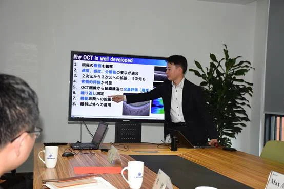
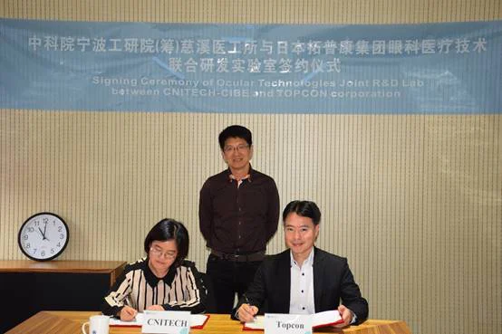
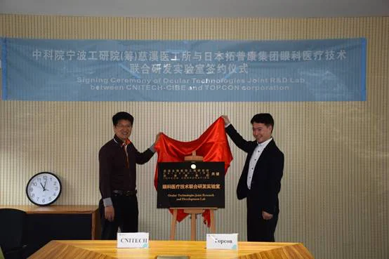
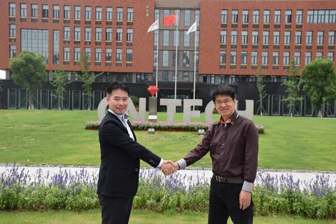

2017年6月14日上午10时，中科院宁波工研院慈溪医工所与日本TOPCON集团举行眼科医疗技术联合研发实验室成立签约揭牌仪式。出席本次签约仪式的有：日本TOPCON集团研发部门高级经理Masahiro Akiba博士，工研院郑剑副院长，刘江高级研究员，知识产权处王慧处长，孙斌等。
首先Masahiro Akiba博士做了关于TOPCON及TOPCON眼科研究的介绍。TOPCON是一家有85年的发展历史的日本科技公司。1932年成立于日本东京，其前身为东京光学机械株式会社，是东芝集团成员之一。其测量仪器、眼科医疗设备、工业电子设备，光学设备及不断延伸的诸多领域产品、技术一直处于领先位置。拓普康公司在海外设立了十几家海外公司和办事机构，遍布欧洲、美国、南美、中国、韩国、新加坡、澳洲等地，形成全球的销售网络，是享誉全球的光机电一体化的跨国产业集团。拓普康眼科设备是旗下最重要的产品之一，主要在“检查”，“诊断”，“治疗”领域给人们的眼睛健康作出贡献。它是世界上最大的眼底照相机生产厂商，拥有最先进的眼科OCT技术。双方明确了在基于眼科影像的自动人工智能疾病诊断算法及技术研究、眼科设备开发等方面进行合作。郑剑副院长对Masahiro Akiba博士的来访签约表示热烈的欢迎，肯定了实验室成立的重要意义，希望双方共同努力，为中国乃至世界的眼睛健康事业做出一定的贡献。最后双方签署成立CNITECH-CIBE与日本TOPCON集团眼科医疗技术联合研发实验室，并举行了揭牌仪式。




撰稿：王浩
摄影：王浩